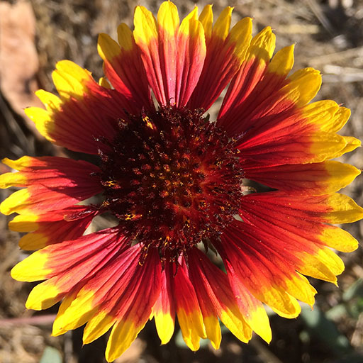
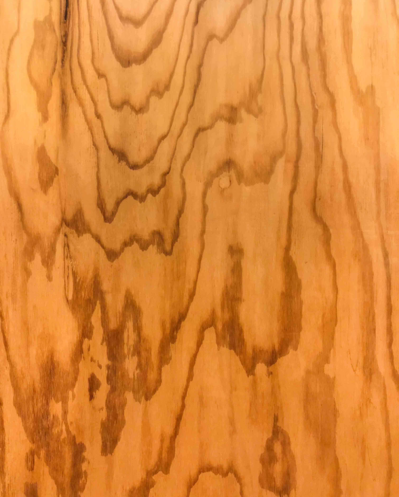
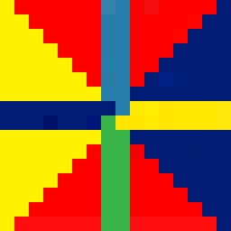
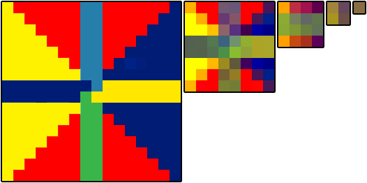

纹理
这篇文章是关于 three.js 系列文章中的一篇。第一篇文章是 关于 three.js 基础知识。上一篇文章 是关于为本文做准备的设置。如果你还没有阅读，可能想从那里开始。
在 Three.js 中，纹理是一个很大的话题，我不完全确定应该在什么层面上解释它们，但我会尝试。 有很多主题，而且很多主题相互关联，所以很难一次性解释清楚。 这是本文的快速目录。
你好，纹理
纹理通常是通过 Photoshop 或 GIMP 等第三方程序创建的图像。例如，让我们将这张图片贴到立方体上。

我们将修改我们的第一个示例之一。我们只需要创建一个 TextureLoader。调用它的 load 方法，使用图像的 URL，并将材质的 map 属性设置为结果，而不是设置它的 color。
+const loader = new THREE.TextureLoader();
+const texture = loader.load( 'resources/images/wall.jpg' );
+texture.colorSpace = THREE.SRGBColorSpace;
const material = new THREE.MeshBasicMaterial({
- color: 0xFF8844,
+ map: texture,
});
注意我们使用的是 MeshBasicMaterial，因此不需要任何光源。
6 个纹理，每个面的立方体使用不同的纹理
如何将 6 个纹理，分别放在立方体的每个面上？





我们只制作6种材质，并在创建 Mesh
const loader = new THREE.TextureLoader();
-const texture = loader.load( 'resources/images/wall.jpg' );
-texture.colorSpace = THREE.SRGBColorSpace;
-const material = new THREE.MeshBasicMaterial({
- map: texture,
-});
+const materials = [
+ new THREE.MeshBasicMaterial({map: loadColorTexture('resources/images/flower-1.jpg')}),
+ new THREE.MeshBasicMaterial({map: loadColorTexture('resources/images/flower-2.jpg')}),
+ new THREE.MeshBasicMaterial({map: loadColorTexture('resources/images/flower-3.jpg')}),
+ new THREE.MeshBasicMaterial({map: loadColorTexture('resources/images/flower-4.jpg')}),
+ new THREE.MeshBasicMaterial({map: loadColorTexture('resources/images/flower-5.jpg')}),
+ new THREE.MeshBasicMaterial({map: loadColorTexture('resources/images/flower-6.jpg')}),
+];
-const cube = new THREE.Mesh(geometry, material);
+const cube = new THREE.Mesh(geometry, materials);
+function loadColorTexture( path ) {
+ const texture = loader.load( path );
+ texture.colorSpace = THREE.SRGBColorSpace;
+ return texture;
+}
时将它们作为数组传递。它有效！
需要注意的是，并非所有几何体类型都支持多材质。BoxGeometry 可以使用6种材质，每个面一个材质。ConeGeometry 可以使用2种材质，一个用于底部，一个用于圆锥。CylinderGeometry 可以使用3种材质，底部、顶部和侧面。对于其他情况，您需要构建或加载自定义几何体和/或修改纹理坐标。
在其他 3D 引擎中更为常见，而且如果你想在单个几何体上使用多张图片，使用贴图图集的性能要高得多。贴图图集是将多张图片放在单个贴图中，然后在几何体的顶点上使用贴图坐标来选择几何体中的每个三角形使用贴图的哪个部分。
什么是贴图坐标？它是添加到几何体每个顶点的数据，用于指定贴图的哪一部分对应该特定顶点。我们将在开始构建自定义几何体时讲解它们。
加载纹理
简单的方法
本站的大多数代码都使用加载纹理的最简单方法。 我们创建一个 TextureLoader，然后调用它的 load 方法。 这将返回一个 Texture 对象。
const texture = loader.load('resources/images/flower-1.jpg');
需要注意的是，使用此方法时，我们的纹理将在 three.js 异步加载图像之前保持透明，加载完成后会用下载的图像更新纹理。
这有一个很大的优点，那就是我们不必等待纹理加载完成，页面会立即开始渲染。对于许多用例来说这可能没问题，但如果我们愿意，我们可以让 three.js 告诉我们纹理何时下载完成。
等待纹理加载
要等待纹理加载完成，纹理加载器的 load 方法接受一个回调函数，该函数将在纹理加载完成时被调用。回到我们最初的例子，我们可以在创建 Mesh 并将其添加到场景之前等待纹理加载，如下所示
const loader = new THREE.TextureLoader();
loader.load('resources/images/wall.jpg', (texture) => {
texture.colorSpace = THREE.SRGBColorSpace;
const material = new THREE.MeshBasicMaterial({
map: texture,
});
const cube = new THREE.Mesh(geometry, material);
scene.add(cube);
cubes.push(cube); // add to our list of cubes to rotate
});
除非你清除浏览器缓存并且网络连接很慢，否则你不太可能看到任何区别，但请放心，它正在等待纹理加载。
等待多个纹理加载
要等到所有纹理都加载完毕，可以使用 LoadingManager。创建一个并将其传递给 TextureLoader，然后将它的 onLoad 属性设置为回调函数。
+const loadManager = new THREE.LoadingManager();
*const loader = new THREE.TextureLoader(loadManager);
const materials = [
new THREE.MeshBasicMaterial({map: loader.load('resources/images/flower-1.jpg')}),
new THREE.MeshBasicMaterial({map: loader.load('resources/images/flower-2.jpg')}),
new THREE.MeshBasicMaterial({map: loader.load('resources/images/flower-3.jpg')}),
new THREE.MeshBasicMaterial({map: loader.load('resources/images/flower-4.jpg')}),
new THREE.MeshBasicMaterial({map: loader.load('resources/images/flower-5.jpg')}),
new THREE.MeshBasicMaterial({map: loader.load('resources/images/flower-6.jpg')}),
];
+loadManager.onLoad = () => {
+ const cube = new THREE.Mesh(geometry, materials);
+ scene.add(cube);
+ cubes.push(cube); // add to our list of cubes to rotate
+};
LoadingManager 也有一个 onProgress 属性，我们可以将其设置为另一个回调以显示进度指示器。
首先，我们将在 HTML 中添加一个进度条
<body> <canvas id="c"></canvas> + <div id="loading"> + <div class="progress"><div class="progressbar"></div></div> + </div> </body>
以及它的 CSS
#loading {
position: fixed;
top: 0;
left: 0;
width: 100%;
height: 100%;
display: flex;
justify-content: center;
align-items: center;
}
#loading .progress {
margin: 1.5em;
border: 1px solid white;
width: 50vw;
}
#loading .progressbar {
margin: 2px;
background: white;
height: 1em;
transform-origin: top left;
transform: scaleX(0);
}
然后在代码中，我们将在 progressbar 回调中更新 onProgress 的缩放。回调会带上最后加载的项目的 URL、当前已加载项目的数量以及总共要加载的项目数量。
+const loadingElem = document.querySelector('#loading');
+const progressBarElem = loadingElem.querySelector('.progressbar');
loadManager.onLoad = () => {
+ loadingElem.style.display = 'none';
const cube = new THREE.Mesh(geometry, materials);
scene.add(cube);
cubes.push(cube); // add to our list of cubes to rotate
};
+loadManager.onProgress = (urlOfLastItemLoaded, itemsLoaded, itemsTotal) => {
+ const progress = itemsLoaded / itemsTotal;
+ progressBarElem.style.transform = `scaleX(${progress})`;
+};
除非你清除缓存并且网络很慢，否则你可能看不到加载条。
从其他来源加载纹理
要使用来自其他服务器的图片，这些服务器需要发送正确的头信息。如果它们没有发送，你将无法在 three.js 中使用这些图片，并且会收到错误。如果你运行提供图片的服务器，请确保它发送正确的头信息。如果你不控制托管图片的服务器，并且它没有发送许可头信息，那么你就无法使用该服务器上的图片。
例如，imgur、flickr 和 github 都发送允许你在 three.js 中使用其服务器上托管的图片的头信息。大多数其他网站则没有发送。
内存使用
纹理通常是 three.js 应用程序中最占用内存的部分。重要的是要理解一般来说，纹理占用了 width * height * 4 * 1.33 字节的内存。
请注意，这并没有涉及压缩。我可以制作一个 .jpg 图像，并将其压缩设置得非常高。例如，假设我正在制作一个房子的场景。房子里面有一张桌子，我决定将这张木纹理放在桌子的顶部表面上

该图像只有 157k，因此下载速度相对较快，但它实际的尺寸是 3024 x 3761 像素。根据上面的等式，这
{kind=link}
3024 * 3761 * 4 * 1.33 = 60505764.5
那张图片在 three.js 中将占用 60 兆内存！。 像那样的几个纹理，你就会用光内存了。
我提到这个是因为了解使用纹理有隐性成本很重要。 为了让 three.js 使用纹理，它必须将其交给 GPU， 而 GPU 通常需要纹理数据是未压缩的。
这个故事的道理是，让你的纹理在尺寸上小，而不仅仅是文件大小小。文件大小小 = 下载快。尺寸小 = 占用内存少。你应该把它们做多小呢？ 尽可能小，同时仍然看起来足够好。
JPG 与 PNG
这与常规 HTML 基本相同，JPG 使用有损压缩，PNG 使用无损压缩，因此 PNG 通常下载速度较慢。但 PNG 支持透明度。对于非图像数据，如法线贴图以及我们稍后会讲到的其他类型的非图像贴图，PNG 也可能是合适的格式。
重要的是要记住，在 WebGL 中，JPG 并不比 PNG 占用更少的内存。如上所述。
过滤和 Mip 映射
让我们将这个 16x16 的纹理应用

到一个立方体
让我们把这个立方体画得很小
嗯，我想这很难看清。让我们放大那个小立方体
GPU 如何知道在绘制小立方体的每个像素时该使用什么颜色？ 如果立方体小到只有 1 或 2 个像素呢？
这就是滤波的作用。
如果是在 Photoshop 中，Photoshop 会将几乎所有像素平均计算，以确定那 1 或 2 个像素应该是什么颜色。这将是一个非常慢的操作。GPU 使用 mipmaps 解决了这个问题。
Mip 是纹理的副本，每一层的宽度和高度都比前一层减半，像素被混合以生成下一层更小的 mip。Mip 会一直创建，直到生成一个 1x1 像素的 mip。对于上面的图像，所有的 mip 最终会是这样的

现在，当立方体被绘制得非常小，仅有 1 或 2 个像素大时，GPU 可以选择仅使用最小的或次小的 mip 级别来决定把这个小立方体涂成什么颜色。
在 three.js 中，你可以选择当纹理被绘制得比其原始尺寸大时会发生什么，以及当它被绘制得比原始尺寸小时会发生什么。
对于设置纹理在被绘制得比原始尺寸大时的过滤器，你可以将 texture.magFilter 属性设置为 THREE.NearestFilter 或 THREE.LinearFilter。NearestFilter 意味着只从原始纹理中选择最接近的单个像素。对于低分辨率纹理，这会给你一种非常像素化的效果，就像 Minecraft 一样。
LinearFilter 意味着从纹理中选择最接近我们应该选择颜色的位置的 4 个像素，并根据实际点与这 4 个像素的距离以适当的比例进行混合。
当纹理被绘制得比其原始大小小的时候设置过滤器时，你将 texture.minFilter 属性设置为六个值之一。
THREE.NearestFilter与上面相同，选择纹理中最接近的像素。
THREE.LinearFilter与上面相同，从纹理中选择 4 个像素并进行混合。
THREE.NearestMipmapNearestFilter选择合适的 mip，然后选择一个像素
THREE.NearestMipmapLinearFilter选择 2 个 mip，从每个 mip 中选择一个像素，然后混合这两个像素
THREE.LinearMipmapNearestFilter选择合适的 mip，然后选择 4 个像素并将它们混合
THREE.LinearMipmapLinearFilter选择 2 个 mip，从每个 mip 中选择 4 个像素，并将全部 8 个像素混合成 1 个像素
这是一个显示所有 6 个设置的示例
change
texture
mipmap
nearest
mipmap
linear
mipmap
nearest
mipmap
linear
需要注意的一点是，左上和顶部中间使用了 NearestFilter 和 LinearFilter，不要使用 mip 映射。正因为如此，它们在远处会闪烁，因为 GPU 正从原始纹理中选择像素。左边只选择了一个像素，而中间选择了 4 个并进行混合，但仍不足以生成一个好的代表颜色。其他 4 条纹理效果更好，右下角的 LinearMipmapLinearFilter 最佳。
如果你点击上面的图片，它会在我们上面使用的纹理和一个每个 mip 级别都是不同颜色的纹理之间切换。
这让发生的情况更加清楚。你可以在左上角和上中看到第一个mip使用到远处。右上角和下中你可以清楚地看到使用了不同的mip的位置。
切换回原始纹理，你可以看到右下角是最光滑、最高质量的。你可能会问，为什么不总是使用这种模式。最明显的原因是，有时你希望画面像素化以获得复古效果或其他原因。下一个最常见的原因是，读取 8 个像素并进行混合比读取 1 个像素并混合要慢。虽然单个纹理不太可能成为快慢的关键，但随着我们在这些文章中深入探讨，我们最终会有同时使用 4 到 5 个纹理的材质。4 个纹理 × 每个纹理 8 个像素，就是每渲染一个像素就要查找 32 个像素。对于移动设备来说，这点尤其重要。
重复、偏移、旋转、环绕纹理
纹理具有用于重复、偏移和旋转纹理的设置。
在 three.js 中，默认情况下纹理不会重复。要设置纹理是否重复，有两个属性，wrapS 表示水平包装，wrapT 表示垂直包装。
它们可以设置为以下之一：
THREE.ClampToEdgeWrapping每条边的最后一个像素会无限重复
THREE.RepeatWrapping纹理被重复
THREE.MirroredRepeatWrapping纹理是镜像并重复的
例如，要在两个方向上启用重复包装：
someTexture.wrapS = THREE.RepeatWrapping; someTexture.wrapT = THREE.RepeatWrapping;
重复设置使用 [repeat] repeat 属性。
const timesToRepeatHorizontally = 4; const timesToRepeatVertically = 2; someTexture.repeat.set(timesToRepeatHorizontally, timesToRepeatVertically);
通过设置 offset 属性可以偏移纹理。纹理的偏移单位是以纹理尺寸为单位，即 1 单位 = 1 个纹理尺寸。换句话说，0 = 无偏移，1 = 偏移一个完整的纹理量。
const xOffset = .5; // offset by half the texture const yOffset = .25; // offset by 1/4 the texture someTexture.offset.set(xOffset, yOffset);
旋转纹理可以通过设置以弧度为单位的 rotation 属性来进行设置，同时可以通过 center 属性选择旋转中心。它默认值为 0,0，即从左下角开始旋转。像偏移一样，这些单位是以纹理大小为单位的，因此将它们设置为 .5, .5 将围绕纹理中心旋转。
someTexture.center.set(.5, .5); someTexture.rotation = THREE.MathUtils.degToRad(45);
让我们修改上面的示例来尝试这些值
首先，我们将保留纹理的引用，以便能够操作它
+const texture = loader.load('resources/images/wall.jpg');
const material = new THREE.MeshBasicMaterial({
- map: loader.load('resources/images/wall.jpg');
+ map: texture,
});
然后我们将再次使用 lil-gui 提供一个简单的界面。
import {GUI} from 'three/addons/libs/lil-gui.module.min.js';
正如我们在之前的 lil-gui 示例中所做的，我们将使用一个简单的类来给 lil-gui 提供一个可以以度为单位操作的对象，但它会以弧度设置属性。
class DegRadHelper {
constructor(obj, prop) {
this.obj = obj;
this.prop = prop;
}
get value() {
return THREE.MathUtils.radToDeg(this.obj[this.prop]);
}
set value(v) {
this.obj[this.prop] = THREE.MathUtils.degToRad(v);
}
}
我们还需要一个类，将像 "123" 这样的字符串转换为像 123 这样的数字，因为 three.js 的枚举设置需要数字，如 wrapS 和 wrapT，而 lil-gui 对枚举只使用字符串。
class StringToNumberHelper {
constructor(obj, prop) {
this.obj = obj;
this.prop = prop;
}
get value() {
return this.obj[this.prop];
}
set value(v) {
this.obj[this.prop] = parseFloat(v);
}
}
使用这些类，我们可以为上述设置创建一个简单的 GUI
const wrapModes = {
'ClampToEdgeWrapping': THREE.ClampToEdgeWrapping,
'RepeatWrapping': THREE.RepeatWrapping,
'MirroredRepeatWrapping': THREE.MirroredRepeatWrapping,
};
function updateTexture() {
texture.needsUpdate = true;
}
const gui = new GUI();
gui.add(new StringToNumberHelper(texture, 'wrapS'), 'value', wrapModes)
.name('texture.wrapS')
.onChange(updateTexture);
gui.add(new StringToNumberHelper(texture, 'wrapT'), 'value', wrapModes)
.name('texture.wrapT')
.onChange(updateTexture);
gui.add(texture.repeat, 'x', 0, 5, .01).name('texture.repeat.x');
gui.add(texture.repeat, 'y', 0, 5, .01).name('texture.repeat.y');
gui.add(texture.offset, 'x', -2, 2, .01).name('texture.offset.x');
gui.add(texture.offset, 'y', -2, 2, .01).name('texture.offset.y');
gui.add(texture.center, 'x', -.5, 1.5, .01).name('texture.center.x');
gui.add(texture.center, 'y', -.5, 1.5, .01).name('texture.center.y');
gui.add(new DegRadHelper(texture, 'rotation'), 'value', -360, 360)
.name('texture.rotation');
关于这个示例最后要注意的是，如果你更改了纹理上的 wrapS 或 wrapT，你也必须设置 texture.needsUpdate，这样 three.js 才知道要应用这些设置。其他设置会自动应用。
这只是纹理主题的第一步。我们稍后会讲解纹理坐标以及可以应用到材质的另外 9 种纹理类型。
现在，让我们继续了解 光源。